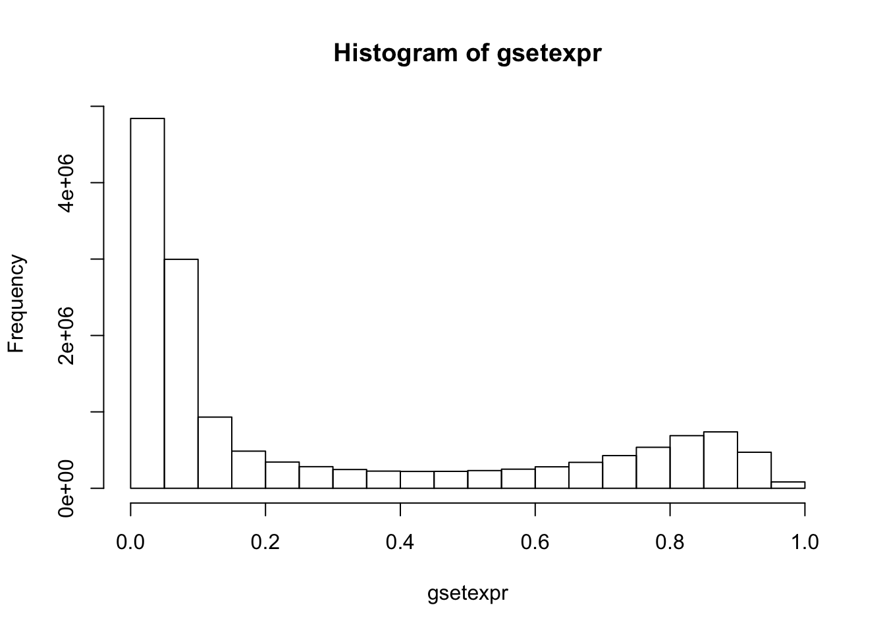
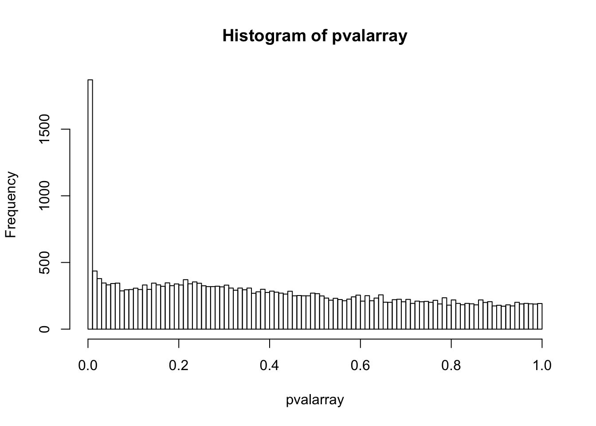
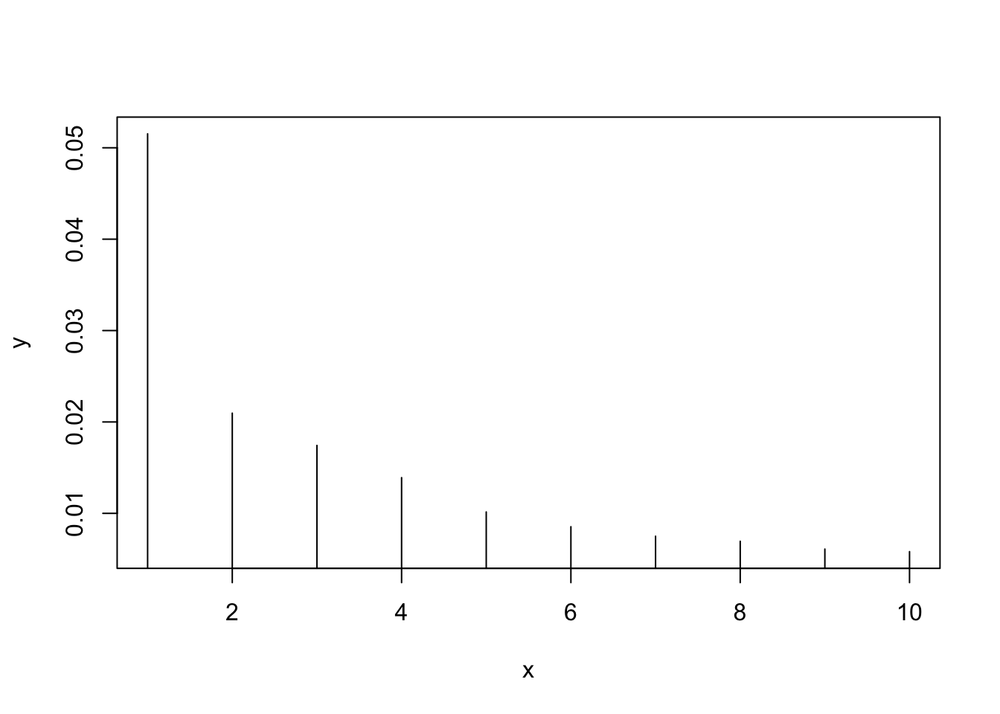
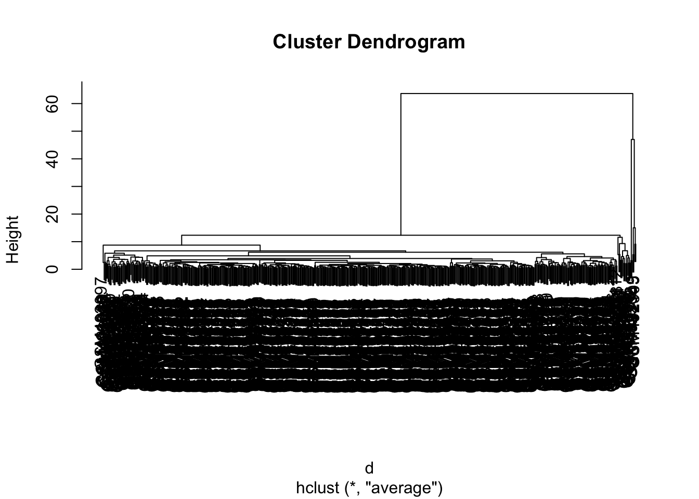

GSE19711
Analysis
-Automatically download the data from GEO
gset = getGEO("GSE19711", destdir="./")## Found 1 file(s)## GSE19711_series_matrix.txt.gz## Using locally cached version: .//GSE19711_series_matrix.txt.gz## Parsed with column specification:
## cols(
## .default = col_double(),
## ID_REF = col_character()
## )## See spec(...) for full column specifications.## Using locally cached version of GPL8490 found here:
## .//GPL8490.soft-Obtain the matrix of beta values where each row corresponds to probes and each column corresponds to samples
gsetexpr = exprs(gset[[1]])
rownames(gsetexpr)[1:5]## [1] "cg00000292" "cg00002426" "cg00003994" "cg00005847" "cg00006414"colnames(gsetexpr)[1:5]## [1] "GSM491937" "GSM491938" "GSM491939" "GSM491940" "GSM491941"-How many samples and how many probes do you have in the data?
sampleset = colnames(gsetexpr)
length(sampleset)## [1] 540probeset = rownames(gsetexpr)
length(probeset)## [1] 27578-How are the beta values distributed?
hist(gsetexpr)
-Do your probes have names?
probeset[1:5]## [1] "cg00000292" "cg00002426" "cg00003994" "cg00005847" "cg00006414"-Do you have annotation that tells the coordinate (in hg19) of each probe and its genomic features (such as related gene name)?
annotation = getGEO("GPL8490", destdir = "./")## Using locally cached version of GPL8490 found here:
## .//GPL8490.softannotation = Table(annotation)
head(annotation)## ID Name IlmnStrand AddressA_ID
## 1 cg00000292 cg00000292 TOP 990370
## 2 cg00002426 cg00002426 TOP 6580397
## 3 cg00003994 cg00003994 TOP 7150184
## 4 cg00005847 cg00005847 BOT 4850717
## 5 cg00006414 cg00006414 BOT 6980731
## 6 cg00007981 cg00007981 TOP 5260689
## AlleleA_ProbeSeq AddressB_ID
## 1 AAACATTAATTACCAACCACTCTTCCAAAAAACACTTACCATTAAAACCA 6660678
## 2 AATATAATAACATTACCTTACCCATCTTATAATCAAACCAAACAAAAACA 6100343
## 3 AATAATAATAATACCCCCTATAATACTAACTAACAAACATACCCTCTTCA 7150392
## 4 TACTATAATACACCCTATATTTAAAACACTAAACTTACCCCATTAAAACA 1260113
## 5 CTCAAAAACCAAACAAAACAAAACCCCAATACTAATCATTAATAAAATCA 4280093
## 6 CCAAATTCAAAAAACTACAACTAAAACTAACTATAAACAAAATAATCACA 6860356
## AlleleB_ProbeSeq GenomeBuild Chr
## 1 AAACATTAATTACCAACCGCTCTTCCAAAAAACACTTACCATTAAAACCG 36 16
## 2 AATATAATAACATTACCTTACCCGTCTTATAATCAAACCAAACGAAAACG 36 3
## 3 AATAATAATAATACCCCCTATAATACTAACTAACAAACATACCCTCTTCG 36 7
## 4 TACTATAATACACCCTATATTTAAAACACTAAACTTACCCCATTAAAACG 36 2
## 5 CTCGAAAACCGAACAAAACAAAACCCCAATACTAATCGTTAATAAAATCG 36 7
## 6 CCAAATTCAAAAAACTACGACTAAAACTAACTATAAACAAAATAATCACG 36 11
## MapInfo Ploidy Species Source SourceVersion SourceStrand
## 1 28797601 diploid Homo sapiens NCBI:RefSeq 36.1 TOP
## 2 57718583 diploid Homo sapiens NCBI:RefSeq 36.1 TOP
## 3 15692387 diploid Homo sapiens NCBI:RefSeq 36.1 BOT
## 4 176737319 diploid Homo sapiens NCBI:RefSeq 36.1 BOT
## 5 148453770 diploid Homo sapiens NCBI:RefSeq 36.1 BOT
## 6 93502242 diploid Homo sapiens NCBI:RefSeq 36.1 BOT
## SourceSeq
## 1 CGGCCTCAATGGTAAGTGTCCCTTGGAAGAGCGGCTGGTAATTAATGCCC
## 2 CGCTCTCGTCTGGTTTGATCACAAGACGGGCAAGGTAATGTCACCACATT
## 3 GGTGGTGGTGGTGCCCCCTGTGATGCTGGCTGGCAAACATGCCCTCTTCG
## 4 TACTGTAATGCACCCTGTATTTAAGGCACTGGGCTTGCCCCATTAAAGCG
## 5 CTCGGAAACCGAGCAGGGCAAAACCCCAGTGCTGATCGTTAGTGGGATCG
## 6 CCAAGTTCAAGGGGCTGCGACTGGAGCTGGCTGTGGACAAGATGGTCACG
## TopGenomicSeq
## 1 TGGGGTGAGTGAGACCACGGGCCTCACCCCGGACCAAGTTAAGCGGAATCTGGAGAAATA[CG]GCCTCAATGGTAAGTGTCCCTTGGAAGAGCGGCTGGTAATTAATGCCCTCCTGCACCCCC
## 2 CCGCTGTCGACCAGCGCAGAATAATGCCACTTTTGATTGCAAAGTGCTATCAAGGAACCA[CG]CTCTCGTCTGGTTTGATCACAAGACGGGCAAGGTAATGTCACCACATTGTCCAGCGGCAT
## 3 GGTGGTGGTGGTGGTGGTGGTGGTGCCCCCTGTGATGCTGGCTGGCAAACATGCCCTCTT[CG]TTGGGGTATCCCGCGATTATGCAAGATGAGGAAGAAGTAGAGAGCTCGGGGTAAGACATA
## 4 CAGATAACTCAATACTGTAATGCACCCTGTATTTAAGGCACTGGGCTTGCCCCATTAAAG[CG]CCATAAATTTGAAGGCCAATGATCGGTTTTCATGTAACGGGTGGTACTTCATACTGAAGT
## 5 GAACCGGCCCAGCTCGGAAACCGAGCAGGGCAAAACCCCAGTGCTGATCGTTAGTGGGAT[CG]CGCCTGTGAATAGCCACTGCCCTCCAGCCTGGGCAACAGCCAGACCCCGTCTGTTTAATA
## 6 AGCCCACGGAGCCCAAGTTCAAGGGGCTGCGACTGGAGCTGGCTGTGGACAAGATGGTCA[CG]TGCATTGCGGTGGGGCTGCCCCTGCTGCTCATCTCGCTGGCCTTCGCGCAGGAGATCTCG
## Next_Base Color_Channel TSS_Coordinate Gene_Strand Gene_ID Symbol
## 1 T Red 28797310 + GeneID:487 ATP2A1
## 2 T Red 57718214 + GeneID:7871 SLMAP
## 3 T Red 15692819 - GeneID:4223 MEOX2
## 4 C Grn 176737051 + GeneID:3232 HOXD3
## 5 C Grn 148454441 + GeneID:57541 ZNF398
## 6 T Red 93501742 + GeneID:24145 PANX1
## Synonym Accession GID
## 1 ATP2A; SERCA1; NM_173201.2 GI:47132613
## 2 SLAP; KIAA1601; NM_007159.2 GI:56550042
## 3 GAX; MOX2; NM_005924.3 GI:55956906
## 4 HOX4; HOX1D; HOX4A; Hox-4.1; MGC10470; NM_006898.4 GI:23510372
## 5 P51; P71; ZER6; KIAA1339; NM_020781.2 GI:25777702
## 6 MRS1; UNQ2529; MGC21309; NM_015368.3 GI:39995063
## Annotation
## 1 isoform a is encoded by transcript variant a; sarcoplasmic/endoplasmic reticulum calcium ATPase 1; calcium pump 1; SR Ca(2+)-ATPase 1; calcium-transporting ATPase sarcoplasmic reticulum type; fast twitch skeletal muscle isoform; endoplasmic reticulum class 1/2 Ca(2+) ATPase; go_component: membrane; go_component: integral to membrane; go_component: sarcoplasmic reticulum; go_component: smooth endoplasmic reticulum; go_function: ATP binding; go_function: hydrolase activity; go_function: nucleotide binding; go_function: calcium ion binding; go_function: magnesium ion binding; go_function: calcium-transporting ATPase activity; go_function: hydrolase activity; acting on acid anhydrides; catalyzing transmembrane movement of substances; go_process: metabolism; go_process: cation transport; go_process: proton transport; go_process: calcium ion transport; go_process: regulation of striated muscle contraction
## 2 Sarcolemmal-associated protein; go_component: integral to plasma membrane; go_component: smooth endoplasmic reticulum; go_function: unfolded protein binding; go_process: protein folding; go_process: muscle contraction
## 3 growth arrest-specific homeo box; go_component: nucleus; go_function: transcription factor activity; go_process: circulation; go_process: development; go_process: regulation of transcription; DNA-dependent
## 4 homeobox protein Hox-D3; Hox-4.1; mouse; homolog of; homeo box D3; go_component: nucleus; go_function: transcription factor activity; go_process: morphogenesis; go_process: regulation of transcription; DNA-dependent
## 5 isoform b is encoded by transcript variant 2; zinc finger DNA binding protein ZER6; zinc finger-estrogen receptor interaction; clone 6; zinc finger DNA binding protein p52/p71; go_component: nucleus; go_function: DNA binding; go_function: zinc ion binding; go_function: metal ion binding; go_function: transcriptional activator activity; go_process: transcription; go_process: regulation of transcription; DNA-dependent
## 6 innexin; go_component: membrane; go_component: gap junction; go_component: integral to membrane
## Product Distance_to_TSS
## 1 ATPase; Ca++ transporting; fast twitch 1 isoform a 291
## 2 sarcolemma associated protein 369
## 3 mesenchyme homeo box 2 432
## 4 homeobox D3 268
## 5 zinc finger 398 isoform b 671
## 6 pannexin 1 500
## CPG_ISLAND CPG_ISLAND_LOCATIONS MIR_CPG_ISLAND RANGE_GB RANGE_START
## 1 TRUE 16:28797486-28797825 NC_000016.8 28797486
## 2 TRUE 3:57716811-57718675 NC_000003.10 57716811
## 3 TRUE 7:15691512-15693551 NC_000007.12 15691512
## 4 FALSE NA
## 5 TRUE 7:148453584-148455804 NC_000007.12 148453584
## 6 TRUE 11:93501124-93502564 NC_000011.8 93501124
## RANGE_END RANGE_STRAND GB_ACC ORF
## 1 28797825 + NM_173201.2 487
## 2 57718675 + NM_007159.2 7871
## 3 15693551 - NM_005924.3 4223
## 4 NA NM_006898.4 3232
## 5 148455804 + NM_020781.2 57541
## 6 93502564 + NM_015368.3 24145-Do you know which samples correspond to healthy individuals, and which samples correspond to the sick ones?
disease = pData(phenoData(gset[[1]]))
disease[1:20,1]## [1] Peripheral Whole Blood 109164 Peripheral Whole Blood 118275
## [3] Peripheral Whole Blood 113964 Peripheral Whole Blood 109567
## [5] Peripheral Whole Blood 100793 Peripheral Whole Blood 115541
## [7] Peripheral Whole Blood 111221 Peripheral Whole Blood 111133
## [9] Peripheral Whole Blood 111871 Peripheral Whole Blood 111572
## [11] Peripheral Whole Blood 111164 Peripheral Whole Blood 111540
## [13] Peripheral Whole Blood 109645 Peripheral Whole Blood 116007
## [15] Peripheral Whole Blood 113005 Peripheral Whole Blood 104583
## [17] Peripheral Whole Blood 114766 Peripheral Whole Blood 109691
## [19] Peripheral Whole Blood 119821 Peripheral Whole Blood 113049
## 540 Levels: Peripheral Whole Blood 100097 ... Peripheral Whole Blood 123698- Cell count estimates
fname <- "GSE19711_cellCounts.csv"
if (!file.exists(fname)) {
require(meffil)
estimates <- meffil.estimate.cell.counts.from.betas(gsetexpr,
cell.type.reference="blood gse35069", verbose = TRUE)
write.csv(estimates, file=fname, row.names=TRUE)
}
estimates <- read.csv(fname)
head(estimates)## X Bcell CD4T CD8T Gran Mono
## 1 GSM491937 0.000000e+00 0.3436418 -4.314231e-17 0.5640887 0.2385841
## 2 GSM491938 0.000000e+00 0.3637580 -3.478880e-17 0.3803222 0.2910747
## 3 GSM491939 0.000000e+00 0.4086299 -4.149844e-17 0.4382775 0.2788429
## 4 GSM491940 2.775558e-17 0.4041456 -4.588442e-17 0.4013604 0.2954427
## 5 GSM491941 0.000000e+00 0.3513154 -4.029153e-17 0.5087325 0.2759206
## 6 GSM491942 -2.775558e-17 0.4300670 -3.290091e-17 0.3946998 0.3057079
## NK
## 1 0.1540291
## 2 0.2504209
## 3 0.1628184
## 4 0.1926206
## 5 0.1603501
## 6 0.1616756For each probe compute a t-test to verify if the distributions of beta values within the probe significantly differ between the two groups. From the t-test, obtain the p value.
pvalarray = array()
namearray = array()
for (i in 1:length(probeset)){
case = gsetexpr[i, grep("Case", disease$`sample type:ch1`)]
control = gsetexpr[i, grep("Control", disease$`sample type:ch1`)]
tt = t.test(case, control)
pvals <- tt$p.value
pvalarray[i] = tt$p.value
namearray[i] = probeset[i]
}Plot the distribution of p values. What is the expected distribution? How does it differ from what you get? We get Anti-conservative p-values. All null p-values form a flat distribution. Peak is close to 0 - that is where the alternative hypotheses are. Not all p-values less than .05 are significant. High p-values indicate false negatives - hypotheses that are not detectable with our test. The left of the histogram shows significance. The right side shows how many p-values are null.
hist(pvalarray, breaks = 100) Performance-wise, how long will it take to compute the test for all probes? Result is 51.228 seconds.
system.time( for (i in 1:length(probeset)){
case = gsetexpr[i, grep("Case", disease$`sample type:ch1`)]
control = gsetexpr[i, grep("Control", disease$`sample type:ch1`)]
tt = t.test(case, control)
pvalarray[i] = tt$p.value
})## user system elapsed
## 35.128 0.153 35.379-What is multiple hypothesis testing? Such testing means that we are trying to check validity of a number of hypotheses simultaneausly. However, as the number of hypotheses increases, o does the chance for observing at least one significant result by chance. In order to reduce the impact of this isssue, it is important to adjust for multiple hypothesis testing, so observing a significant result by chance is below our chosen significance level.
-How should we adjust for multiple hypothesis testing in our case?
pvalarray.adjusted <- p.adjust(pvalarray, method="BH", n = length(pvalarray))The p-values should be adjusted using “adjust” funtion. It is important to choose the right method to complete this action. In this case, “BH” method is the optimal one, since according to R documentation it controls the false discovery rate (proportion which is expected among the rejected hypotheses). This is exactly what we need in multiple hypothesis testing. It is also mentioned that these methods “are more powerful than others”.
-Did you find any probes that show statistically significant modification difference between healthy and sick individuals?
pvalarray.significant <- pvalarray.adjusted[pvalarray.adjusted < 0.04]
namearray.significant <- namearray[pvalarray.adjusted < 0.04]
namearray.significant [1:20]## [1] "cg00030047" "cg00044245" "cg00055233" "cg00059225" "cg00071250"
## [6] "cg00134539" "cg00135056" "cg00138126" "cg00145118" "cg00168785"
## [11] "cg00194146" "cg00214794" "cg00234616" "cg00245878" "cg00269932"
## [16] "cg00278366" "cg00323915" "cg00333226" "cg00333528" "cg00334507"In this case we define smaller than 0.04 adjusted pvalue as “significant”. The variables which are within this criteria are chosen and their names are printed.
-Where are these probes? What genes are they related to?
genes <- annotation$Gene_ID[match(namearray.significant, annotation$ID)]
location <- annotation$CPG_ISLAND_LOCATIONS[match(namearray.significant, annotation$ID)]
genes [1:20]## [1] "GeneID:148646" "GeneID:2045" "GeneID:6013" "GeneID:2741"
## [5] "GeneID:356" "GeneID:53347" "GeneID:56941" "GeneID:56937"
## [9] "GeneID:10007" "GeneID:151525" "GeneID:54438" "GeneID:3872"
## [13] "GeneID:3196" "GeneID:51351" "GeneID:3904" "GeneID:144715"
## [17] "GeneID:55303" "GeneID:375567" "GeneID:2569" "GeneID:9961"location [1:20]## [1] "1:6190892-6192286" "6:94184813-94186481"
## [3] "9:5328869-5329825" "5:151284294-151285499"
## [5] "" ""
## [7] "3:130479918-130481447" ""
## [9] "" "2:159850758-159852121"
## [11] "6:13594141-13597231" ""
## [13] "2:74593784-74597576" ""
## [15] "" "12:109423611-109424819"
## [17] "" "7:49783381-49786431"
## [19] "" ""We should find genes and then chromosomes (where probes are located). We do so by matching the names of adjusted pvalues and annotation IDs.
PCA
source("https://bioconductor.org/biocLite.R")## Bioconductor version 3.6 (BiocInstaller 1.28.0), ?biocLite for helpbiocLite("impute")## BioC_mirror: https://bioconductor.org## Using Bioconductor 3.6 (BiocInstaller 1.28.0), R 3.4.1 (2017-06-30).## Installing package(s) 'impute'##
## The downloaded binary packages are in
## /var/folders/qs/dgv7jfw116ndln1lsm34567c0000gn/T//Rtmp6cGZUJ/downloaded_packages## Old packages: 'RankAggreg', 'Rcpp', 'bindr', 'hms', 'stringi', 'withr',
## 'yaml'library(impute)## Warning: package 'impute' was built under R version 3.4.2Some samples could be outliers messing up our results. How to detect outliers?
imputed <- impute.knn(gsetexpr)## Cluster size 27578 broken into 8269 19309
## Cluster size 8269 broken into 2817 5452
## Cluster size 2817 broken into 1589 1228
## Cluster size 1589 broken into 867 722
## Done cluster 867
## Done cluster 722
## Done cluster 1589
## Done cluster 1228
## Done cluster 2817
## Cluster size 5452 broken into 2578 2874
## Cluster size 2578 broken into 1396 1182
## Done cluster 1396
## Done cluster 1182
## Done cluster 2578
## Cluster size 2874 broken into 1621 1253
## Cluster size 1621 broken into 937 684
## Done cluster 937
## Done cluster 684
## Done cluster 1621
## Done cluster 1253
## Done cluster 2874
## Done cluster 5452
## Done cluster 8269
## Cluster size 19309 broken into 2970 16339
## Cluster size 2970 broken into 1210 1760
## Done cluster 1210
## Cluster size 1760 broken into 1005 755
## Done cluster 1005
## Done cluster 755
## Done cluster 1760
## Done cluster 2970
## Cluster size 16339 broken into 12286 4053
## Cluster size 12286 broken into 6943 5343
## Cluster size 6943 broken into 3418 3525
## Cluster size 3418 broken into 1554 1864
## Cluster size 1554 broken into 862 692
## Done cluster 862
## Done cluster 692
## Done cluster 1554
## Cluster size 1864 broken into 917 947
## Done cluster 917
## Done cluster 947
## Done cluster 1864
## Done cluster 3418
## Cluster size 3525 broken into 2183 1342
## Cluster size 2183 broken into 938 1245
## Done cluster 938
## Done cluster 1245
## Done cluster 2183
## Done cluster 1342
## Done cluster 3525
## Done cluster 6943
## Cluster size 5343 broken into 2791 2552
## Cluster size 2791 broken into 1634 1157
## Cluster size 1634 broken into 1029 605
## Done cluster 1029
## Done cluster 605
## Done cluster 1634
## Done cluster 1157
## Done cluster 2791
## Cluster size 2552 broken into 1101 1451
## Done cluster 1101
## Done cluster 1451
## Done cluster 2552
## Done cluster 5343
## Done cluster 12286
## Cluster size 4053 broken into 1488 2565
## Done cluster 1488
## Cluster size 2565 broken into 2477 88
## Cluster size 2477 broken into 1501 976
## Cluster size 1501 broken into 925 576
## Done cluster 925
## Done cluster 576
## Done cluster 1501
## Done cluster 976
## Done cluster 2477
## Done cluster 88
## Done cluster 2565
## Done cluster 4053
## Done cluster 16339
## Done cluster 19309pca <- prcomp(t(imputed$data), scale=FALSE)
x <- 1:10
y <- (pca$sdev / sum(pca$sdev))[1:10]
plot(x, y, type='h')
groups <- sample(0:1, ncol(gsetexpr), replace = TRUE)
pairs(pca$x[, 1:3], col=as.factor(groups))
table(annotation$CHR)## < table of extent 0 >d <- dist(pca$x[, 1:5])
h <- hclust(d, method="average")
plot(h)
Thousands of t-tests can be computed at once within seconds. How? limma
library(limma)## Warning: package 'limma' was built under R version 3.4.3##
## Attaching package: 'limma'## The following object is masked from 'package:BiocGenerics':
##
## plotMAage <- rnorm(ncol(gsetexpr), mean=60)
model <- model.matrix(~ 1 + groups + age)
fit <- lmFit(gsetexpr, model)
fit <- eBayes(fit)
topTable(fit, coef=2)## logFC AveExpr t P.Value adj.P.Val B
## cg04726200 0.03427464 0.7661925 4.332993 1.755233e-05 0.2494924 1.1206018
## cg03336167 0.04947029 0.5688796 4.287360 2.143998e-05 0.2494924 0.9316231
## cg13084525 0.02541376 0.4812554 4.205378 3.052242e-05 0.2494924 0.5931224
## cg12437481 0.07460914 0.6166641 4.155427 3.778962e-05 0.2494924 0.3927531
## cg18799866 0.03058428 0.4879692 4.112611 4.523396e-05 0.2494924 0.2189523
## cg19497444 0.02477761 0.8522346 3.907951 1.049870e-04 0.4825554 -0.5772163
## cg09616556 0.02919461 0.7440575 3.822600 1.475284e-04 0.5812198 -0.8985279
## cg20178764 0.02216180 0.3546201 3.584788 3.681147e-04 0.9666332 -1.7581739
## cg03445896 0.02269627 0.6074967 3.556102 4.095438e-04 0.9666332 -1.8599151
## cg17181653 0.02266444 0.4739565 3.496680 5.098873e-04 0.9666332 -2.0656981# => rezultatas: reiksmingai pakite probai del ligos, atsizvelgiant i amziaus ir lyties skirtumus!
# amzius: https://dnamage.genetics.ucla.edu, kraujo kompozicijaPermutacijos!!